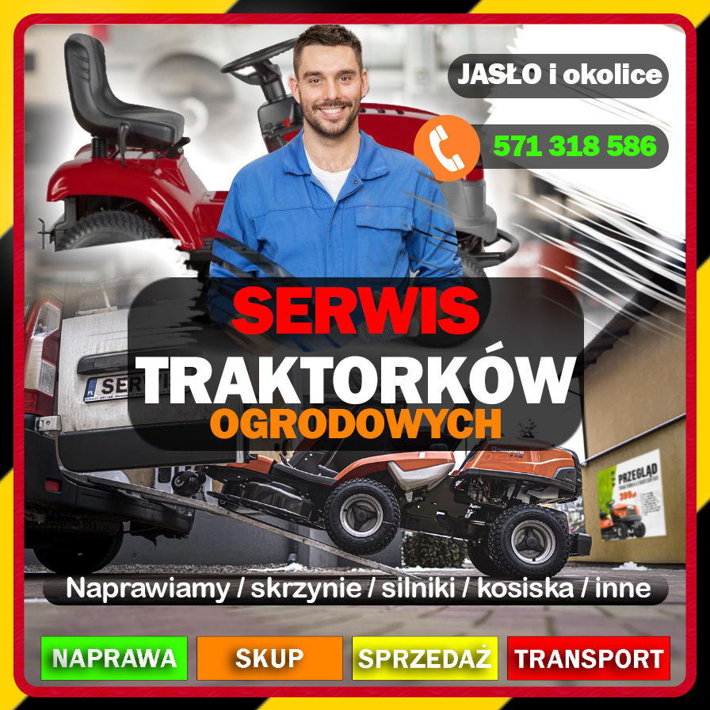

Naprawa • Serwis • Przeglądy • Transport
Lat doświadczenia
Naprawionych maszyn
Zaangażowania

Zajmujemy się profesjonalnym serwisem traktorków ogrodowych, kosiarek i maszyn ogrodniczych. Oferujemy kompleksową diagnostykę, naprawy mechaniczne, przeglądy sezonowe oraz transport sprzętu.
Dzięki wieloletniemu doświadczeniu oraz indywidualnemu podejściu pomagamy klientom szybko przywrócić maszyny do pełnej sprawności.
Umów serwisNaprawy wszystkich popularnych marek.
Wymiana oleju, filtrów oraz regulacja.
Naprawa i regeneracja przekładni.
Odbiór i dowóz sprzętu do klienta.
Wyważanie i ostrzenie noży koszących.
Szybkie wykrywanie usterek.